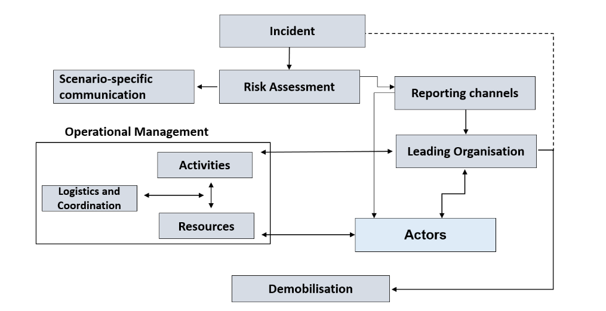

by Heidrun Böhm; Detlef Cwojdzinski; Ulrike Grote; Kalle Heitkötter; Christine Knauer; Ingrid Möller; Guido Pukropski; Julia Sasse; Tanja Schmidt; Ute Siering; Karlin Stark; Katrin Steul; Peter Tinnemann. Editors: Ute Teichert; Peter Tinnemann.
Last Updated: 2022-03-04
Created: 2021-03-07
Language: English
Created by: Simon Worthington
CRI000: Front Matter
Title page
Crisis Management
Textbook for Public Health Services
Edited by Ute Teichert & Peter Tinnemann
v1.0, 2021
Pre-release v1.0
In recent years, crisis management is gaining considerably in importance, in the public health services in general and in particular since the SARS-CoV-II pandemic globally. In Germany, decision-making authority for crisis management of biological emergencies resides in principle with the municipal health authorities.
In light of the current situation (as of 31 March 2020) involving the spread of the novel coronavirus, we are hereby providing extracts from a preliminary version of our textbook (Krisenmanagement) open-access in English to a global audience.
Crisis management tools support staff in the public health services to ensure that the authorities are able to continue functioning in biological emergencies. As a rule, normal administrative structures cannot cope with the challenges that arise in a crisis. Information and communications management for example must be adapted if it is to cope with increased demands. If sufficient specialist personnel are not available, competences have to be pooled and provided from a more central point. This textbook is designed to provide employees of public health offices, as well as other public health institutions, with pointers on how to systematically prepare themselves for preventing hazards in case of crisis, and familiarise them with the basics of crisis management. As well as covering specialised aspects, the textbook also provides recommendations in particular on operational planning and working in teams. It is supplemented with checklists designed and established in practise to serve as practical tools.
The content brought together in this unique textbook is based on the authors' years of theoretical study and practical experience within public health services. This textbook is a joint work of all the authors involved, and does not represent the opinion of individual institutions or individual authors.
We are planning to update and expand this textbook in the future. We would therefore be delighted if you could share with us your suggestions, comments and additions. We are using Hypothes.is for your comments and additions to our textbook.
Publication details
Crisis Management Textbook for Public Health Services ISBN 978-1-906496-97-5 DOI 10.5281/zenodo.4587727 Date 2021 Place Berlin
TWH Linking Knowledge UG Gustav-Heinemann-Ufer 56 50968 Köln
This textbook is based on the Textbook Krisenmanagement (DOI 10.25815/h0ec-f967), a joint project of the Academy of Public Health Services and the Open Science Lab of the TIB – Leibniz-Information Centre for Science and Technology University Library. Translation from German to English was provided by Engagement Global gGmbh.
The translation of this book into English was supported by the Connective Cities Project of Engagement Global, on behalf of the German Federal Ministry for Economic Cooperation and Development (BMZ).
Open access
This textbook and manual, which is available online free of charge, is designed as a practical tool for you to use in your daily work. To promote research and teaching in order to improve public health, it is important that all staff of public health services, interested professionals and the public at large have access at all times to the best available knowledge on public health. A printed copy of the most up-to-date version of the textbook and manual is available on demand.
Copyright notice and licence
This textbook is an Open Educational Resource (OER), which means it is available under the licence Creative Commons – Attribution-ShareAlike 4.0 International (CC BY-SA 4.0). You may reproduce, process, remix, modify or build on the material in any format or medium, for any purpose, including commercial purposes. The licensor cannot revoke these freedoms, provided that you comply with the terms of the licence. You must make appropriate reference to copyright and similar rights, include a link to the license and indicate whether any changes have been made. This information may be provided in any appropriate manner, but not in such a way as to create the impression that the licensor is supporting you or your use of the material directly. Nor may you insert any additional clauses or use any technical methods that would legally prohibit others from doing anything the license permits.
No guarantees are given nor is any warranty provided.
The licence may not provide you with permission to do everything you would need to do when using the textbook for your particular purpose. There may for instance be other rights, such as rights of privacy and data protection, which you will need to observe and which will restrict your use of the material accordingly.
Help us to improve the textbook
We would be delighted to receive comments and feedback from all readers, regardless of their specific expertise or background. We are using Hypothes.is for your comments and additions to our textbook.
The textbook is made available as a GitHub repository.
Sustainability and further development
The product of this collaborative writing process has been and will continue to be supplemented and improved. Here, readers too can also play an active role by providing their feedback and addenda. The authors of all the texts are conscious of the fact that the themes covered so far represent only segments of the range of activities performed by public health services.
Sine this is an agile project that will be continuously developed together with the Academy of Public Health Services, as well as continuously updating the existing chapters it will also be possible to add further thematic areas.
Method
All texts were developed and written using the so-called book sprint method. A book sprint is an agile method that enables authors to collaboratively write longer and more complex texts in a short period of time. All books sprints were organised and carried out jointly by the Academy of Public Health Services and the Open Science Lab of the TIB – Leibniz-Information Centre for Science and Technology
University Library. The book sprint method enables authors to create digital content on a goal-oriented basis.
It is based on the principles of sharing, co-development, community building and collective ownership of the product. This open, transparent method has already been successfully used at several institutions, including the TIB. It is based on goal-competence profiles defined in advance, on teaching modules that have been tried and tested in prior teaching settings, and on practical examples of application (use cases).
Authors use digital technologies to write the content This enables a joint process of concurrently writing texts which are designed as a single collectively owned product in their entirety, until then final result is achieved. Chapters or entire books are written in this manner. In intensive three-day book sprints we have worked with up to ten experts on a selected topic Facilitated by a book sprint moderator with experience in media education, participants create joint content on selected topics related to work in the public health service.
How the textbook was produced
This original textbook Krisenmanaement was a joint project of the Academy of Public Health Services and the Open Science Lab of the TIB – Leibniz-Information Centre for Science and Technology University Library.
Together with teachers from the Academy, experts from different fields of public health have been co-authoring texts for this series of textbooks in book sprints since 2019.
The initial phase of collaborative writing was followed by an editing phase during which supplemental content was inserted and existing content revised. The text contributions are based on a broad range of relevant literature, years of experience gained by long-standing public health practitioners, and experiences and suggestions put forward by young professionals with an interest in public health.
In all the textbooks, jointly defined chapters on e.g. history, objectives, tasks, structures and definitions are described in detail. Each book has been designed as a comprehensive, self-contained work, and can be read either in conjunction with the other books or as a stand-alone reference work in its own right.
The entire textbook series is designed as an Open Educational Resource (OER) and is published under an open licence. This allows free access, editing and further processing by others without restriction or with only minor restrictions.
The original textbook in German and the this textbook will be updated and is available as a printed textbook at a reasonable price.
Disclaimer
The content brought together in this unique textbook is based on the authors' years of theoretical study and practical experience in public health. It is designed to provide helpful information on the topics discussed.
This text book is a collaborative work by all the authors involved and does not represent the opinion of individual institutions for which the authors work.
The authors, editors and translators made every effort to ensure that the information accessible through this book is correct, complete or up-to-date, but accept no liability for this. They make this textbook and its contents available on an 'as is' basis, and give no assurances or guarantees of any kind whatsoever with respect to this book or its content.
Neither the authors, the editors, the translators or any other actors involved are liable for any damages resulting from, or connected with, the use of this book. This is a comprehensive limitation of liability that applies to all damage of any kind, including (but not restricted to) compensatory, direct, indirect or consequential damages; loss of data, income or profit; loss of or damage to property; and claims by third parties.
References to other websites, literature or other sources are provided for information purposes only, and do not constitute an endorsement of websites or other sources. Readers should also be aware that websites referred to in this textbook are subject to change.
Authors
Dipl.-Med. Heidrun Böhm Saxon State Ministry for Social Affairs and Social Cohesion, Dresden
Detlef Cwojdzinski ex-Senate Administration for Health and Equality, Berlin
Ulrike Grote, MPH Robert Koch Institute, Berlin
Dr. med. Kalle Heitkötter Public Health Office, Düsseldorf
Dr. med. Christine Knauer Public Health Office, District Administration of Rhein-Pfalz District
Dr. med. Ingrid Möller Public Health Office, City of Leipzig
Guido Pukropski District Administration, Düsseldorf
Dr. rer. nat. Julia Sasse Robert Koch Institute, Berlin
Tanja Schmidt, MPH WHO Regional Office for Europe, Copenhagen
Dr. med. Ute Siering Public Health Office, District Administration of Ludwigslust-Parchim
Dr. med. Karlin Stark Regional Council, Stuttgart
Dr. med. Katrin Steul, BSc. Public Health Office, City of Frankfurt am Main
Dr. med. Peter Tinnemann, MPH Academy of Public Health Services, Berlin
Acknowledgements and thanks
Anna Eckhardt and Lambert Heller for their support indeveloping the project and conducting the book sprint.
Dr. med. Jakob Schumacher and Simon Worthington for their support inimplementing the project and for the technical realisation on GitHub.
Bernd Schiller and Petra Münstedt for carefully checking and meticulously correcting the text of theentire work.
Dr. med. Claudia Kaufhold and André Riffer for checking the thematic consistency and accuracy of the content.
The GermanFederal Ministry of Health (Bundesministerium für Gesundheit), which funded the collaborative creation of our textbook. Without this funding the project would not have been possible.
The translation of this book into English was financed and supported by Engagement Global GmbH, on behalf of the German Federal Ministry for Economic Cooperation and Development (Bundesministerium für wirtschaftliche Zusammenarbeit und Entwicklung).
CRI001: Definitions
In infection control and population protection, many terms and abbreviations are used whose meaning is not always immediately evident. The Robert Koch Institute (RKI) and the Federal Office for Civil Protection and Disaster Assistance (BBK) explain common technical terms.
In Germany, 'population protection' is used as a generic term to refer to all tasks and measures for disaster risk management performed by municipalities and federal states, and for civil protection performed by the national government. The BBK has published a practitioner's glossary (in German only) defining selected key terms in population protection.
Important in the context of the spread of the coronavirus SARS-CoV-2 are the definitions of the following terms:
Outbreak
Sudden increase in the incidence of disease, either localised or scattered, which exceeds the incidence of that disease which would be expected at that time, in that place and in that population, and for which a common source or an epidemic link is highly probable or proven. In other words, an outbreak comprises an increased incidence of a disease that can be traced to a common cause.
Where several cases meet the same diagnostic criteria and an epidemiological link exists, the term outbreak is applied. In cases of major clinical and epidemiological significance (rare and dangerous diseases), isolated infections may sometimes also be described as 'outbreaks'. There is no sharp distinction between the terms 'outbreak' and 'epidemic', nor is there a fundamental difference, because an epidemic in this sense is a major outbreak.
Secondary outbreak A further outbreak in the vicinity of a knownoutbreak where a link exists (e.g. outbreaks linked within a family or in a community institution).
Satellite outbreak A small outbreak that is causally linked to larger events far away.
Endemic
Continuous occurrence (no time limit) of a disease or a pathogen in a certain region or a certain population. Within the population in a given region, all persons have a similar risk of contracting the disease.
Epidemic
Wave of illness of epidemic proportions; the number of cases of illness that share the same aetiology increases relative to the baseline. The process is limited to a specific period of time and a specific place.
Pandemic
The occurrence of a new global spread of an infectious disease with a high number of infections, usually also involving severe illness, over a limited period of time. If human to human transmission continues e.g. as a result of a novel influenza virus, the World Health Organization may 'declare' a pandemic in accordance with the International Health Regulations.
Irrespective of whether it goes on to declare a pandemic, the World Health Organization may already declare a public health emergency of international concern e.g. when a novel human pathogen or another acute health hazard arises.
CRI002: Operational planning
This chapter presents the specifics of operational planning for public health authorities in case of biological emergencies, and introduces some principles.
Apart from this, the (higher) regional health authorities in some federal states have drawn up plans for viral haemorrhagic fever (VHF), infection alert plans and plans for high consequence infectious diseases (HCID). All federal states have drawn up plans for influenza pandemics. In addition, the ministries of the interior in the federal states have produced alert and operational plans for disaster risk management. All of these plans can serve as a basis for specific plans at regional level.
Operational plans for crisis situations often take the form of legal regulations. When operations are underway these are difficult to read, and they are not structured as they would need to be for application in the field. Often no electronic systems are used to draw the operational plans. Creating and maintaining them by hand is a time-consuming process. Updating them is therefore costly. As a result the plans are not always up-to-date.
The staff involved need to be familiarised with the content of the plans through training before operations take place, and if possible should first be able to try things out in drills.
N.B.: Plans can only be successfully implemented if content is regularly updated and users are trained to apply it.
Objectives of successful operational planning
An operational plan should describe possible measures that need to be implemented by the staff of a public authority in a special situation, e.g. the hazards that arise in case of an epidemic.
Operational plans must contain up-to-date information, be self-explanatory and have a uniform structure. Complicated and poorly structured plans are not fit for purpose. In practice, checklists and flowcharts have proven helpful as they make it easier to understand the processes, and provide rapid orientation during a crisis.
Structuring operational plans as shown below has proved successful:

FigureStructure of an operational plan
The graphic shows individual points in an operational plan in the form of a flow diagram. The points can be used to structure an operational plan.
An explanation of each point is given below.
Risk assessment
In addition to the general risk assessment that (sub-regional) administrative districts/independent cities or federal states (regions) are obliged to carry out in the context of population protection, the responsible public health offices should conduct a corresponding subject-specific risk assessment for their region as a precautionary measure.
On the basis of this risk assessment, the public health authority must carry out an incident-specific analysis before any operational measures are commenced. Other authorities are to be involved as required. In such a risk analysis, the following factors can be taken into account:
Number of persons affected
Mortality/lethality
Local spread
Likelihood of spread
Dynamics of spread
Type of agent (biological, chemical...)
Scenario-specific communication
For communication with partners, the general public and the press, it is essential in particular emergency scenarios to specify who is responsible for coordination and deciding which strategies are implemented, and which other authorities and institutions must be involved. It is also important to set out the fundamental objectives of communication, the specific content, the instruments employed in press work, and the target groups. (see chapter: Communications)
As well as communication with external partners, it is important to remember that staff of public authorities also have to be informed. In a crisis, everyone should have sufficient information in order to promote general understanding of the exceptional circumstances when the work situation is tense.
Alert system
In an emergency, the regional health authorities are generally notified (alerted) by the responsible coordination centres; (higher/lower) regional health authorities are often notified by central bodies, e.g. the police operations centre.
In the public health authorities, it is important to plan the internal alert and/or notification procedures for in-house staff and, if necessary, for other institutions that are to be involved. It makes sense to make use of existing alert systems in the authorities. Depending on the circumstances, it may be possible to set up alert contact groups at third parties, e.g. the fire service operations centre, so that staff at public health offices can be notified automatically without the need for further action. Alert and notification lists must be regularly updated. Alert drills can be used to test whether professional and private contact data are up to date.
Notification channels
When crisis-like incidents occur, the early recognition, validation and assessment of the situation is key to the rapid introduction of specific control and prevention measures. Pursuant to Article 6 of the International Health Regulations (IHR) and pursuant to Article 9 of Decision No. 1082/2013/EU of the European Parliament and of the Council of 22 October 2013 on serious cross-border threats, Germany is legally obliged to immediately notify the international community of any events that may constitute a public health emergency of international concern or a serious cross-border threat to health. This notification provides early warning, as well as information for rapid assessment and early warning of all actors, and where appropriate joint coordination. It is provided by the public health office to the national (federal) authority, via the responsible regional authority.
Pursuant to IHR Annex 2 (see Figure 2), cases of smallpox, poliomyelitis (due to wild-type poliovirus), human influenza (caused by a new subtype) and severe acute respiratory syndrome (SARS) must be notified.
'On 30 January 2020 the WHO declared the outbreak (of COVID-19) a public health emergency of international concern, and saw a compelling need to step up internationally coordinated efforts to control the outbreak in accordance with the International Health Regulations (IHR), also to better support countries with weaker health systems.' (COVID-19, information for employees and travellers, German Federal Foreign Office, 28 February 2020)
Cases of cholera, yellow fever, pneumonic plague, viral haemorrhagic fever or West Nile fever, as well as other events of potential international public health concern, must be notified to the WHO under certain circumstances.
FigureDecision instrument for the assessment and notification of events under the IHR (source: WHO)
The public health office notifies the national level via the competent regional authority if there is a mere possibility that an event might constitute a public health emergency of international concern according to the criteria of Annex 2 to the IHR.
The final assessment of whether an event must be notified to the World Health Organization or the competent authorities of the European Union is made by the competent national authority
Management structure
Staff at the public health authorities involved must be informed about the general management organisation structure in the case of large-scale emergencies and disasters (see chapter: Working in teams).
The operational plans of the public health authorities involved must specify who has management responsibility in particular scenarios. This responsibility must be clearly stated. If several authorities are involved, the areas of responsibility must be clearly defined.
In on-site assignments, it makes sense if the manager of the public health office can be recognised by all involved, e.g. by means of a vest.
Actors and tasks
Depending on the scenario, different actors – individuals and institutions – with different responsibilities will called on to respond to a particular incident. The operational plan must clearly show which actors are responsible for which tasks. It is also important to specify who is to coordinate particular tasks and which actors also play an active role.
Measures to be taken in an emergency
The measures undertaken depend on the respective scenario. A series of recommendations for action is presented in the toolbox of this textbook (see chapter: Toolbox).
Particular measures may be required by statutory regulations. In the public health services sector in Germany, these requirements follow from the Protection against Infection Act, the German Drinking Water Ordinance and the public health laws in the federal states. Other measures, also those not based on statutory requirements, must be specified individually in the operational plan.
Not all measures will necessarily be implemented in a real emergency scenario. On the other hand, other measures will be needed spontaneously and may not have been planned in advance.
The textbook's toolbox offers an array of options, from which the user can make the right selection as required. Measures that have not been documented/outlined must be flexibly organised and implemented by the responsible team.
Logistics and coordination
The coordination of logistics measures in an emergency can tie up many personnel. Test samples and disposal management for example can be considered as logistics tasks. For this reason, the focus of good operational planning should lie in this area in order to alleviate the burden in a crisis.
Resources
In some situations the resources required are provided by third parties These include hospital care facilities, the availability of vaccines and antidotes. Information on who will provide what, and when, should be included in operational plans, as making enquiries during a crisis costs a great deal of time and therefore must be avoided at all costs.
On the other hand, certain materials that are not available in an emergency or that may quickly be in short supply should be stocked by the health authorities. One important example is personal protective equipment (PPE).
Checklists for emergencies
One useful and important measure to keep things running smoothly are checklists that lay down in writing what information is required or needs to be obtained, and when. One good example is checklists in aviation, which pilots go through before take-off.
In a crisis, checklists enable us to act with confidence, which is important. They enable us to review our intuitive actions and check that the measures we have taken are complete. The handbook provides checklists at various points to support the heath authorities that need to act.
CRI003: Working in teams
Importance of a work/crisis team
Generally speaking, the established administrative structures of the public health offices, as well as other public health institutions, lack the preparedness that would enable them to respond effectively e.g. to the challenges of a biological emergency or crisis swiftly, without errors and under a uniform management structure. To meet these requirements, when such incidents occur one obvious option for public health authorities is to operate in team mode. Operating within the structures of a work/crisis team is similar to working in projects. When working under a uniform management structure it is necessary to monitor the performance of tasks, coordinate deadlines and document decisions.
As well as the measures to cope with the urgent tasks (in a crisis) that result e.g. from a biological hazard, it must also be ensured that all other vital sovereign functions (outbreak management, autopsies, reporting etc.) can be guaranteed as well, possibly with fewer human and other resources. It is then essential to prioritise tasks.
When the public health office and other public health institutions work together in teams, it is advisable to take account of the emergency preparedness and disaster risk management structures that already exist in the administrative district, city or region. Here it is necessary to clarify whether in a health-related situation the health sector structures should assume a lead role. Germany's various regions have different models. In some cases the health sector takes the lead, while in others joint teams are formed that include the health and interior/disaster risk management sectors.
Organisation & management of teams
Responding to emergencies and disasters involves three relevant components of management:
the overall political responsibility component
the operational-tactical component and
the administrative-organisational component.
In Germany the structures are largely the same at the levels of administrative districts and independent cities.
FigureComponents of management
The overall political responsibility component
Particularly in large-scale and long-lasting emergencies or disasters, the individual with overall political responsibility (e.g. mayor, district chief executive or minister) will assume leadership. This is also the case with biological emergencies. Within this framework, the individual with overall political responsibility initiates and holds responsibility for both operational (operational-tactical) and administrative (administrative-organisational) measures. Depending on the regulations in force in the federal state, either two separate teams (one management/disaster risk management team and one administrative team), or a single overall team that integrates the two areas, will be tasked to carry out the measures.
The operational-tactical component
At the operational-tactical level, in emergencies below the threshold of a disaster (large-scale emergency) the 'management team' is the structure used. In the case of larger emergencies above the disaster threshold the 'disaster risk management team' is mobilised. The two teams usually comprise the same members. A management team may have fewer team members, however. Team structures are enlarged in proportion to the scale of an emergency incident.
Official regulation DV 100 'Leadership and command in emergency operations'
In Germany, all disaster risk management organisations (fire service, emergency services, police/regulatory authorities and relief organisations) also operate in team mode in emergency operations, each according to the same type of official regulation (e.g. the fire service regulation 'Leadership and command in emergency operations' (FwDV 100). To enable the health authorities to find their way round this structure it is important to integrate it into the emergency and disaster response system early on.
In Germany, at the level of cities and administrative districts the respective official regulation is the management instrument for all emergency and disaster response agencies. The official regulation integrates all representatives of the key areas of emergency and disaster response and health care into a single management framework with equal responsibility.
A management or disaster risk management team takes care of all the operational-tactical measures that arise, e.g. formation of sections, provision of personnel and reserves, or the establishment and operation of a communication structure.
FigureStructure of a management team
In general, the following staff functions (S) should be established in both teams:
S 1 (Personnel) steers all operative personnel.
S 2 (Situation) collects all facts needed to assess thesituation. Staff function S2 also includes the mission diary and review functions.
S 3 (Mission) coordinates and monitors all operational tasks.It is also responsible for task control.
S 4 (Logistics) steers all logistics activities and the required materials.
S 5 (Press and media work) coordinated the press and media work with allstakeholders.
S 6 (IT and communications) provides IT services and all communicationstechnology.
When incidents (e.g. escape of a chemical substance) occur, the public health office can provide expert advisors and liaison persons for the management/disaster risk management team.
The aforementioned staff functions are described in more detail in the section 'Tasks of the staff functions'.
The administrative-organisational component
Depending on the regional provisions, as well as a management/disaster risk management team there may also be an administrative team that functions either as a stand-alone unit or in conjunction with the management/disaster risk management team. When the two teams operate together they form a single unit. While the management/disaster risk management team covers the operational-tactical component, the administrative team deals with the administrative-organisational side of disaster risk management. Under time-critical conditions and taking all aspects into account, the administrative team is there to take decisions for which the management/disaster risk management team is not responsible due to legal requirements, financial responsibilities and political frameworks. These include e.g. decisions on closing public institutions and facilities.
To enable a supra-regional, standard organisational structure a document (German only) has been published for Germany's regional states entitledForming teams – the administrative-organisational component. This advice it containsapplies to the work of teams both in large-scale emergencies and in case of disaster. Some of Germany's regional states are already using this component for incidents below the threshold of a large-scale emergency.
According to this advice the administrative team should include representatives of all departments necessary/responsible for managing the emergency in the regional administration, other public authorities and third parties with relevant expertise. As well as permanent members of the team, which also include representatives of the public health office/public health authority as expert advisors, the team will also include incident-specific members. These might also be non-governmental actors (e.g. electricity providers in the event of a power failure). The graphic below – 'Structure of an administrative team' – provides an overview of the composition of an administrative team:
FigureStructure of an administrative team
The 'team leader' is responsible for leading and coordinating the administrative team. This individual takes decisions on measures to be introduced, defines objectives, and decides on the appointment of further situation-specific members. If political responsibility does not rest with the administrative team leader, the team leader decides which measures will be determined within the team and which ones by the body with overall political responsibility.
The administrative team coordination group (ATCG) comprises the sections internal services and situation and documentation. The internal services section alerts team members and when necessary updates the team's official regulations, as well as the alert and contact data lists. It also ensures that the team is operational, i.e. availability of resources, reordering of materials, organisation of rooms and meetings. The ATCG section situation and documentation is responsible for requesting, collating, evaluating and documenting information and reports on the situation and reports. It also keeps the mission diary, and is responsible for describing the situation and forecasting future development.
The public information and media work (PIMW) function coordinates, supports and informs the press and other media, e.g. by preparing press briefings, evaluating press releases or setting up a public hotline.
Permanent members of the team (PMTs) assess the incident from their own expert perspective, describe problems and hazards from their perspective, and identify options and proposals for expedient measures. The PMTs are representatives of necessary departments, public authorities or third parties who possess decision-making authority. The areas usually represented are public safety and order, disaster risk management, health, environment, the police force and social affairs. Depending on the situation, further departments may be involved such as construction and housing supervision (e.g. in case of fires), the education authority etc. A member will also be appointed to liaise with the management team.
As with the PMTs, event-specific members of the team(ESMTs) also bring their specific expertise to bear in assessing andmanaging the situation. They are selected according to the situation, and comprise representatives of departments of the sub-regional authority's own administration, other public authorities, municipalities or third parties with relevant expertise, who are authorised to take decisions. In Germany the latter include for instance the fire department; aid organisations; the Federal Agency for Technical Relief (THW), the Bundeswehr; energy utility companies and transport companies. The ESMTs can to some extent perform their task within the scope of their normal work, and need not be permanently present on the administrative team.
Cooperation between the teams
The graphic below provides an overview of how the teams work together when crises occur:
FigureThe teams
The crisis team in the public health office
In the event of a crisis, the public health office's work/crisis team is basically a supplementary organisational structure within the office which is there to support the director, who will usually represent the public health office on the management or disaster risk management team.
The public health office team itself usually does not perform a management role. Instead it coordinates and designs the measures as instructed by the director of the public health office. In case of limited biological emergencies, however, it can and should also act autonomously. When more major hazards arise, on the other hand, it is a supportive element that reports to the director on the management/disaster risk management team.
Public health offices perform both administrative-organisational tasks, such as coordination and decision-making on specialist tasks within their own sphere of responsibility, as well as operational-tactical tasks such as the formation of focal areas of operation, the deployment of personnel and the management of logistics.
Depending on circumstances with regard to human resources, the structure of the team in public health officers should be based on the German fire service regulation FwDV 100. If the hazards and the tasks faced by the team so require, further in-house personnel can be provided to support the team, or if necessary additional personnel can be brought in from other departments. Where expedient for the performance of tasks, team functions should be amalgamated.
For the crisis team to become operational, a certain basic infrastructure first has to be created. The crisis team requires a suitable room with appropriate facilities, including information and communication technology. Several things should always be available, while others can be provided as the occasion demands.
The checklist for ‘Infrastructure and equipment in a crisis team' provides suggestions that you can use when setting up a crisis team.
Crisis management at the level of the supreme regional authorities
Germany's federal state ministries and their subordinate general and specific regional authorities are each responsible for preventing and responding to crises within the scope of their respective remits. When a national response is required in case of looming biological emergencies, when damage has occurred or in case of disasters, the teams of these public health authorities may be called upon.
In some cases these teams assume a lead role based on the 'lead ministry principle', while in other cases joint teams are formed by the ministries of health and the interior. In case of health-related emergencies, the federal state ministries of health can usually propose calling up the team of the regional government. On this team the ministries concerned then work together within the scope of their respective remits and deal with the tasks on the basis of lead ministerial responsibility.
Modus operandi in the team
The team operates on an objectives-oriented basis, in closed iterative conceptual planning and implementation loops. The iterative approach ensures the necessary assessment of the situation and adoption of resolutions.
FigureHow the crisis team works
Functions and tasks in the crisis team
The staff functions and tasks in the crisis team are shown in the following table. They are based on the example of fire service regulation FwDV 100:
Function
Tasks
S 1 (Personnel)
Alert personnel on duty
Alert personnel off duty
Monitor alerts
Manage personnel lists Monitor working hours
Provide reserve personnel (in case of protracted operations)
Notify and request support from public officers, public authorities, organisations
S 2 (Situation)
Ensure information flows
Notify superior authorities
Notify in-house staff on a regular basis
Notify other agencies Document operations
Keep the mission diary
Collect, save and keep a record of information material
Prepare a final report
S 3 (Mission)
Assess the situation
Conduct operations, e.g. define key areas of operation
Define needed human resources, material resources and reserves
Ensure management within the framework of the operational plan (management structure)
Conduct discussions of the situation
Assign and monitor tasks
Work together with other public offices, public authorities and organisations
S 4 (Logistics)
Request further operating resources
Draw on additional resources
Provide expendables and operating resources
Provide and supply meals and lodging
Define supply structures
Provide personal protective equipment for staff
S 5 (Press and media work)
Inform the press and the media
Collect, select and process information from operations
Capture, document and evaluate the press and media situation
Prepare information for the press and the media
Support the press and the media
Inform, guide and accommodate representatives of the press and the media
Prepare and hold press conferences
Set up and support public hotlines
Issue warnings and missing person messages
S 6 (IT and communications)
Plan the use of IT and communications, design a communications strategy, ensure its operationalisation
Equip incident management with office communications
CRI004: Communications
Good communications are a key component of successful crisis management. Here we need to distinguish between (1) 'internal' communications within the administrative/crisis team, which is governed by the official regulations of the team, and (2) 'external' communications. Internal communications are covered in the chapter 'Operational planning'. This chapter describes 'external' communications with the public.
Here we draw a distinction between 'risk communication' and 'crisis communication'. 'Risk communication' refers to communication before a crisis arises. 'Crisis communication' becomes necessary once the crisis occurs. Good risk communication makes it considerably easier to communicate during the crisis, because it creates knowledge on which crisis management can build.
The Guidelines on crisis communication published (in German only) by Germany's Federal Ministry of the Interior, Building and Community (BMI) provides a clear overview of the following topics for effective communication:
Risk communication
Crisis communication
Target-group appropriate crisis communication
Crisis communication plan
Planning aids
Good communication can enable the public, media representatives and public authorities to become an effective team for managing a crisis.
Risk communication
The aim of risk communication is to build up the mutual confidence and trust of all stakeholders. This is best achieved by forming long-term relationships. These are the basis for credibility, which is essential in a crisis. Risk communication therefore relies on transparency, reliability and maximum honesty. Accordingly, risk communication is a continuous process. Public authorities should therefore look upon it and use it as a
'sharing of information and opinions on risks, risk prevention, risk minimisation and risk acceptance' (Federal Office for Civil Protection and Disaster Assistance 2011),
that involves all stakeholders.
This particularly important when the public are to be motivated to themselves perform risk management. One example of crisis preparedness is the brochure published by the BBK entitled Guidance on emergency preparednessand what to do in an emergency (German only), which contains important information and checklists
'on all key topics – from food supplies to the emergency bag – for personal emergency preparedness' (Federal Office for Civil Protection and Disaster Assistance, 2018).
Only preventive communication will enable a crisis response that is able to draw on the preparedness and knowledge in place without delay.
One example of the need for risk communication is the shortage of resources described in this manual, which in this instance involves the distribution of medicines. As long as there is no risk to their health, any individual will understand and accept that medical personnel who have to take care of the first patients must be protected first. So must the personnel responsible for maintaining critical infrastructures or public safety. For work within your own office, this can mean establishing before a crisis occurs which tasks that are otherwise an important part of routines can be deprioritised during the crisis.
One of the challenges for risk communication is that the perception of risk is influenced by many factors. This can mean that major risks are underestimated and minor risks overestimated, with the result that the measures undertaken by public health offices are seen as either excessive or insufficient, Here is an example: A vaccination is refused because of the fear of extremely rare side effects, and the much higher risk of severe illness through infection is implicitly accepted. If dangerous diseases occur only rarely due to high vaccination rates, separating the risk-benefit calculations for the individual and for society becomes particularly challenging.
How a particular risk is communicated also plays a crucial role in how it is perceived. For example, various studies indicate that with respect to the likelihood of occurrence, relative figures often lead to a higher assessment of the risk than absolute figures (Wegwarth, Odette; Gigerenzer, Gerd 2011). How a message is put across can also lead to a misjudgement of the damage that will be done. This plays an especially major role with biological emergencies, in which the extent of damage depends on so many factors that it is almost impossible to assess. This uncertainty must also be communicated. For example, strategic plans for dealing with a 30% absence of personnel have led to the firm belief that roughly 30% of people fall ill in any pandemic.
The timing of risk communication can also affect the perception of risk. Publication of such emergency-related information therefore needs to be placed in the context of a risk assessment which makes clear to the target audience whether the information is of a general nature and of no current relevance, or whether it is designed to prepare recipients for an incident expected in the near future. As well as building long-term trust and confidence, risk communication can also be used in the short term in case of assumed, foreseeable risks (e.g. extreme weather events) to
'raise public awareness of forthcoming events and prepare measures to warn and protect the public,
Unlike risk communication, which focuses on crisis preparedness, crisis communication involves
'sharing information and opinions during a crisis in order to prevent or limit damage to a protected good' (Federal Office for Civil Protection and Disaster Assistance, 2011).
Crisis communication must ensure that all responsible persons/bodies have the same level of information and knowledge. Equally, the media and the general public must be informed as truthfully, transparently and promptly as possible.
Crisis communication aims to provide a sufficient amount of specific information in good time, so that the measures needed to protect the population can be taken. To avoid uncertainty an agreed language regime is required, which all stakeholders must adhere to. This is why crisis communication also needs to be planned in advance.
If communication is poorly timed or if conflicting information is transmitted, there is a risk of excessive misinformation and false rumours that in the worst case may lead to hysteria or panic. The initial reactions may already be crucial in determining whether the organisational structures lose control of how the crisis develops.
N.B.: To maintain control over communication, please therefore apply the following principles:
Act, don't react
Release only reliable information, and explain any areas of uncertainty
Maintain contact and be accessible
Press and media work
In a crisis, external communication must be clearly regulated. The press and the media need permanent contact persons. Information may only be communicated to the public by authorised persons who are specially trained to perform this task. People making enquiries must be referred to authorised communicators. Specialist expertise does not automatically entail an ability to communicate it comprehensibly. In public administrations, press work is usually managed through a press office. This press office must be called in.
Since the public expect the authorities to provide timely assistance, give assurances and function efficiently, dealing with uncertainties – which often exist when a crisis begins – is a particular challenge. To maintain trust and confidence, this uncertainty must be communicated. At the same time the authorities must identify the measures that will be taken to clarify the uncertainties and say when they expect further information to be available.
When preparing for a press conference it is important not only to prepare the information that the authorities intend to communicate, but also to consider what information the press would like to have. If the media representatives do not receive answers to their questions from the authorised persons they will look for other 'experts' to provide answers. For highly complex and specialised topics it may therefore be advisable to invite a team of qualified individuals to the press conference. Depending on the scenario, this might include for instance the attending physician, emergency responders who are involved or representatives of other public authorities.
It is also helpful to provide the press representatives with a good organisational environment for their professional work. This includes for example a sufficiently large press room with good acoustics, if possible equipped with desks, chairs, plug points and wireless network, so that the press can process the information right away. If the time frame is longer it may be appropriate to provide catering, or at least drinks and possibly simple meals. If possible the press and media should be supported by a trained individual who is permanently present, or who at least can be reached at any time.
Direct communication – Internet, hotline, social media & apps
As well as press conferences, which enable exclusively face-to-face contact between the authorities and media representatives, the Internet offers numerous possibilities for communicating with the public directly. This also requires advance preparation in order to be able to access the needed infrastructure and expertise when a crisis occurs. Knowledge of the target group is especially important for direct communication, to ensure that the right channels of communication and appropriate language are selected.
For online communication dark sites can be prepared in advance, which can then be fed with current information and quickly activated when a crisis occurs.
Another form of communication that is very popular with the public, but very personnel-intensive, are hotlines. Conversely, the most frequently asked questions also indicate the areas in which there is a particular need for information, or even where false information is being spread.
The Federal Emergency Information and News App, or Warning App NINA for short, was specially developed to provide early warning of emergencies. Important messages warning of various hazards, such as the spread of hazardous substances or a major fire, are sent directly to the mobile phones of the public. Here too advance risk communication is required in order to publicise the app.
Specialist communication
In some crises it may be necessary or helpful to conduct targeted specialist communication with particular target groups. For the public health services, it would be particularly important to conduct such communication with doctors working in their area of responsibility. First of all, they too may be subject to uncertainty which urgently needs to be addressed. Secondly they are important multipliers who enjoy a high level of trust among the public.
Given their training, medical professionals can be expected to possess both medical knowledge and the language skills needed to communicate with the public.
Responsibility and documentation
Administrations usually have press offices with press spokespersons who are responsible for public relations. The handling of press enquiries from other authorities, enquiries from institutions and enquiries from the public should be clearly regulated. In crises, central information points are often set up that take on part of the public relations work. It is not advisable for experts to provide information in an unregulated manner. The persons authorised to provide information should be obliged to document enquiries in a transparent and structured way. The key persons responsible for public relations must be able at all times to ascertain what information has already been communicated.
Another thing that is important in communication, particularly in crises, is documentation, which must guarantee transparency. Clearly defined internal structures for responsibility and decision-making can facilitate timely and appropriate implementation via the communication channels. Here it is also essential to take into account the feedback from the implementing entities, as well as information from sections of the administration not involved and from the public.
CRI005: Scenarios – CBRN
Introduction
The abbreviation CBRN stands for chemical, biological, radiological and nuclear. This covers non-weapons-grade and weapons-grade chemical, biological, radiological and nuclear materials that can cause significant damage. Non-weapons grade materials are traditionally referred to as dangerous goods, and can also include contaminated foodstuffs, livestock and plants.
There are many threats apart from just the deliberate release of pathogens. There are also environmental factors which play a major role. In all CBRN scenarios, public health offices can be called on in various different ways. In biological scenarios the staff of the public health office usually hold lead responsibility during the primary and secondary phases of the emergency. In C and R/N scenarios they are more likely to hold professional responsibility during the second phase, where there is then a particular focus on medical care after an incident.
B scenarios (synonymous with biological emergencies)
The following section deals with emergencies arising in conjunction with infectious diseases.
C-R/N scenarios
C-R/N scenarios will be integrated into the textbook at a later point in time and are not covered by this pre-release version.
CRI006: B scenarios
Various B scenarios
We will begin by looking at biological emergencies, which are also referred to as B scenarios. These are per se highly diverse.
A distinction is drawn between the following six types of scenario:
Single case of a disease involving highly pathogenic agents
Local epidemic
Supra-regional epidemic
Pandemic
Discovery of a suspicious substance/attack on individuals
Bioterrorist attack
Risk assessment
The term 'biological emergency' usually refers to the spread of infectious agents or corresponding toxins. To assess the risk in an acute situation it is helpful to identify the biological agent. A distinction needs to be drawn between whether the outbreak is taking place for instance in hospital, where the agent/hazard is usually known, or whether the situation involves an increased incidence of disease with similar presentations, the cause of which is unclear (both most closely resemble scenario 2 in the graphic 'Overview of different scenarios'). The latter would be conceivable for instance in a care home where there was an increased incidence of gastroenteritis symptoms. Another possibility here is the risk posed by 'bioterrorism' where the status in those affected is (still) unknown (comes closest to scenario 5 in the graphic 'Overview of different scenarios'). Here it is also crucial to have the right laboratory testing facilities available. Existing rapid tests are only partially reliable, particularly with environmental samples, and can produce both false positive and false negative results. To assess the risk it is therefore always necessary to have samples analysed in an experienced laboratory.
N.B.: Although the overwhelming majority of outbreaks have a natural cause, when assessing the risk the possibility of intentional release should always be considered.
A risk matrix can help assess the anticipated scope of damage, as shown in the graphic 'Overview of different scenarios' (source: Generic plan for biologicalemergencies – based on 5 scenarios; version 2.0 |Senate Department for Health and Social Services – graphic modified in scenarios 5 and 6).
FigureOverview of different scenarios
Figure 8: Overview of different scenarios
To assess the risk it is also necessary to define the objective that can be achieved in the respective situation. At the beginning of an epidemic, for example, the objective may be to prevent or at least delay the outbreak. Once an epidemic has taken hold, on the other hand, the focus may be on maintaining the life of society.
Measures
The transitions between the three phases described below are smooth, hence when assessing the risk it will be necessary to gradually adjust the measures employed. See the information published by the RKI in its Epidemiological Bulletin 7/2020 on Objectives of infection control measures.
Containment
In this phase an attempt is made to identify every infected person as soon as possible and isolate them immediately. All contacts are traced and placed under observation or where appropriate on the quarantine (especially with diseases where others can be infected before symptoms begin), in order to break the chain of infection as quickly as possible.
This strategy aims to eradicate the pathogen. If this is not possible, an attempt should be made to gain time for the best possible preparation, e.g. to develop therapeutic options and/or vaccines, to conduct studies on the properties of the pathogen, to increase treatment capacities in hospitals and to time the outbreak so that it does not coincide with other infection events (e.g. the annual 'flu wave').
Protection of vulnerable groups
Once it is no longer possible to prevent the spread of the pathogen, protection then focuses on individuals and groups with an elevated risk of severe disease.
Mitigation
If the disease becomes so widespread that the strategy of protecting particularly vulnerable groups is no longer possible, measures then focus on mitigating further negative impact on the public and on mitigating the impact on the life of society.
Situation-specific communication
Particularly at the beginning of a biological emergency, it must be assumed that it is not known what properties the pathogen possesses or even which pathogen it is. This uncertainty must also be communicated. It must be made clear which, what is being assumed and what further investigations are underway in connection with that.
One particular concern in communication on infectious diseases is the fact that members of the public suddenly see their neighbours/fellow human beings as a threat. It is therefore very important to provide information on routes of infection and protective measures. If a shortage of protective means is foreseeable, priorities will also need to be set. These must be weighed up very carefully and communicated clearly – if possible before a crisis arises. In 'quiet times' almost anyone will agree that in a medical crisis, medical personnel who take care of the sick must be given preference for prophylaxis.
Concerning risk communication and crisis communication please refer to the chapter ‘Communications’.
Alert system, notification channels
In Germany, pursuant to the Protection against Infection Act (IfSG) physicians, heads of facilities and laboratories are obliged to notify the responsible health office forthwith. The health offices are obliged to notify the supreme regional health authority, which in turn notifies the RKI. A prerequisite for this is 24/7 availability. Pursuant to Section 25 in conjunction with Section 16 of the IfSG, the health office shall without delay conduct investigations into the source of the pathogen and into patient contacts. It shall also define measures to prevent spread (prohibition of activities/visits, observation, isolation in the home, or e.g. isolation in an appropriate hospital pursuant to Section 30 (6) IfSG....).
A joint decision should be taken together with the treating facility, the press office and the supreme regional authority as to how and when the public shall be informed. To this end a press conference should be convened at short notice. Responsibilities will be defined beforehand: Who will leave the press conference, who will say what, and on which topics?
For further information on the alert system and notification procedures please refer to the sections 'Alert system' and 'Notification channels' in the chapter 'Operational planning'.
Management structure
The management structure for crises is described in detail in the chapter 'Operational planning'.
Actors and tasks
In biological emergencies primary responsibility rests with the health office, which must perform numerous tasks in this situation.
Examples include:
Risk assessment
Risk and crisis communication
Internal communication
Public information
Preparation of press work, possibly setting up of hotline Contact tracing, definition of anti epidemic measures pursuant to IfSG, categorisation of contacts Routine epidemiological surveillance
Occupational safety and health, ensuring provision of personal protective equipment
Ordering of diagnostic measures and decision on scope of investigation
Protective measures to reduce contacts Instructions on behavioural measures Organisation and monitoring of patient Regulation of sampling and transport of samples
Information and advisory tasks for other authorities, facilities and the public
Definition and monitoring of isolation arrangements
Decision-making on nature and scope of disinfection measures and their monitoring, as well as expert advice
Possibly decision-making on decontamination measures Ordering of isolation by the medical officer
Ordering of autopsy, certification of death, oversight of transport of corpses and cremation
Disposal management
Possibly coordination of vaccinations
Possibly coordination of post-exposure prophylaxis Documentation and evaluation
As well as the health offices, the regional authorities and health ministries are also involved when an incident occurs. Each federal state has its own specific rules governing precisely which tasks they perform in an emergency.
The RKI is a scientific-cum-medical institution of the German Government with a mandate for public health. It is responsible for fighting communicable diseases. The RKI plays a special role in further developing methods and designing scientific standards, e.g. for investigating suspected cases of the deliberate release of pathogens, which are referred to it as the designated body. In accordance with statutory provisions, the RKI advises primarily the professional public and policymakers. Nevertheless, it also sees its task as being to inform citizens and patients on infection risks and health trends, or refer them to other sources of information. In order to respond appropriately to a threatening situation or one perceived as such, and improve their own health situation, as many interested parties as possible should be able to form their own opinion. To facilitate this, in 2016 the RKI published further information in its brochure Protecting Health – Assessing Risks.
The Permanent Working Group of Competence and Treatment Centres(STAKOB)is another important actor in biological emergencies.STAKOB is a Germany-wide network of experts for the management and care of patients with high consequence infectious diseases. The competence centres possess special expertise in the field of public health, while the treatment centres specialise in the clinical care of patients with highly pathogenic, life-threatening diseases in special isolation units. STAKOB Can also be contacted for advice by telephone.
Other actors are the various health care providers. These include doctors' offices (outpatient care) and hospitals (inpatient care). Laboratories and pharmacies are also involved.
Finally, in an epidemic – and in a pandemic – all employers, together with the responsible company doctors, have these occupational safety and health tasks.
Particularly when a bioterrorist attack is suspected, other actors are also involved:
the police, to determine whether the suspicion is warranted. They will assess whether there is a serious threat. If they find that there is, further measures are necessary such as ruling out explosives. The police will then be responsible for cordoning off the crime scene and identifying the perpetrators.
the fire brigade in case of a biological emergency, in order to prevent the further spread of biological agents. The fire brigade will often assume responsibility for taking samples on behalf of the medical officer.
the Analytical Task Force (ATF)has been equipped with special measurement technology by the Federal Office for Civil Protection and Disaster Assistance. ATFs are stationed 10 locations in Germany. They can deploy anywhere they are called to within a maximum of three hours. If powder is found they are responders of choice for measurements to rule out the presence of chemical substances or radio-nuclear materials.
Resources
Staff
The key resource in biological emergencies is staff. Here there needs to be a focus on measures for occupational safety and health (personal protection measures).
In biological emergencies, a shortage of medical personnel trained in the use of personal protective equipment (PPE), including emergency service personnel, can arise very quickly. The shortage of trained staff is further exacerbated when the infection protection set is used, due the short time for which it can be worn and the physical strain it places on the individual wearing it.
Personal protective equipment (PPE)
In the event of a Germany wide-crisis,, PPE will very quickly be sold out. Accordingly, precautionary steps must be taken to stockpile sufficient quantities of PPE (BUT: Remember that PPE has a limited shelf life).
What constitutes a sufficient quantity is dependent on the risk assessment, what scenarios are to be expected and what dimensions they might assume within your sphere of responsibility. You also need to take into account the wearing times. As described in the 'Toolbox' chapter with respect to occupational safety and health, per suit the infection protection set is much cheaper than a suit with a blower unit. However, since the set can only be worn for a short time – a maximum of two hours, and for wearers who lack experience significantly less – consumption is much higher.
Packaging materials for samples
To be able to ship samples quickly and safely in a biological emergency, you should keep a sufficient stock of packaging materials (P620). Incorrect packaging material can also cause sample material to leak out of the package and thus contaminate people.
Furthermore, 'improvised' packages can be difficult for laboratory personnel to open, thus wasting valuable time.
Other resources
Other resources, such as medicines for PEP and therapy, isolation facilities, staff to monitor domestic quarantine, and hospital capacities – especially beds with ventilators and isolation beds – are covered in the 'Toolbox' chapter.
Outpatient care
Outpatient care plays a major role in Germany's influenza pandemic planning and its planning for COVID-19. The RKI's pandemic preparedness plan states
The organisation and risk management of outpatient care should be planned before a crisis arises.
'Beyond the provision of basic services, responsibility for outpatient care lies with the associations of statutory health insurance physicians as part of the obligation to ensure care pursuant to Section 72 of Volume 5 of the German Social Insurance Code (SGB V)'. (Structures and measures, national pandemic preparedness planpart 1, RKI)
To ensure the quality of outpatient care it is urgently necessary to provide doctors in private practice with information materials geared specifically to their work. These should comprise practical handouts, e.g. on taking case histories, providing counselling, sampling, diagnostic laboratories, and protective measures for the doctor, their staff and other patients. The published recommendations of the German Medical Association and the Statutory Accident Insurance Association for Health and Welfare Services (BGW) include special instructions for risk management in medical practices.
Hospital allocation, inpatient care
When the number of persons injured exceeds the immediately available resources of the emergency services, the term 'mass-casualty incident' (MCI) is used. This textbook will provide more information on this, and on screening and hospital allocation, later on.
In Germany, which hospital allocation systems are used when the emergency services are working normally varies from region to region. In what biological emergencies the allocation systems seem appropriate for routine operation/MCI, or whether alternative allocation systems should be used, needs to be defined.
Ideally an allocation system will be interlinked not only with inpatient care, but also with the outpatient sector. It will then be possible to alleviate pressure on the inpatient sector when necessary.
Extensive preparations are also required in the inpatient sector. The RKI's pandemic preparedness plan states
'It is especially important to ensure that the admission and care of influenza patients are physically separate from general patient care, and that additional bed capacities are created, for instance by postponing elective operations.' (Structures and measures, national pandemic preparedness plan part 1, RKI)
Concerning the need for personal protective equipment (PPE), see the chapter 'Toolbox'. It is also important to consider the increased need e.g. for medicines.
CRI010: Toolbox
This toolbox describes in detail technical and logistical measures that may be necessary in biological emergencies.
The technical measures include
Diagnostics
Occupational safety and health/personal protective equipment (PPE)
Surveillance
Disinfection measures
Protective measures
Isolation
The logistical measures include:
Patient transport
Sample management
Therapy and vaccination strategy
Handling of corpses
Disposal management
The information contained here is of a generic nature. For numerous pathogens there are specific recommendations, which can be found e.g. on the RKI website underInfektionskrankheiten A-Z (Communicable diseases A-Z),and on the websites of the federal state authorities or where appropriate the respective competent authorities.
Technical measures
Diagnostics
Diagnosing the disease is an essential part of assessing which therapeutic and epidemiological measures are necessary. Diagnostics encompasses taking the patient's case history, performing a physical examination and performing examinations using apparatus, including laboratory analysis. In many communicable diseases, diagnosis is made more difficult by the fact that when the disease begins the symptoms are often so unspecific that laboratory tests are needed in order to confirm the diagnosis.
Accordingly, the requirements for laboratory diagnostics are as follows:
High sensitivity: it must be possible to detect minimum amounts of a pathogen, in order to avoid false negative results
High specificity: it must be possible to clearly distinguish between similar pathogens/antigens, in order to avoid false positive results
High stability: minimum effect of factors that might falsify the result by producing false positives or false negatives (e.g. inhibitors)
High rapidity: shortest possible time until test result is available, so that the right measures can be taken as quickly as possible
Optimal diagnosis requires proper sampling, as well as the right packaging and shipment (also described in this toolbox). In order not to lose any unnecessary time in a crisis, the teams managing the crisis should be aware of corresponding laboratories within their sphere of responsibility. They should also know what range of diagnostic services the laboratories provide and have their contact details. To help make the process smooth one it is a good idea to discuss something with the laboratory – and in particular to determine which type of samples are most appropriate. The laboratory should also be notified in advance so that it can begin preparatory measures before the sample arrives.
At the beginning of an outbreak or in the case of diseases with high lethality, it is necessary to diagnose every single case. In the course of an epidemic, however, overstretched laboratories or clear epidemiological links may necessitate diagnosis based on case definitions, which are actually designed to ensure standard criteria for the surveillance of communicable diseases Germany-wide.
Occupational safety and health/personal protective equipment
Basics
In Germany, work with biological agents is governed by the Biological Agents Ordinance (BioStoffV),which aims to ensure safety and health protection at workplaces. The Committee on Biological Agents (ABAS) at theFederal Ministry of Labour and Social Affairsuses the Ordinance to determine the state of the art in science, technology, occupational medicine and occupational hygiene, and makes this information available in the form of Technical Rules forBiological Agents (TRBA).
These cover:
General information, structure and application
Activities involving biological agents (e.g. protective measures in laboratories, in acute biological emergencies, solid waste, waste water, health care)
Assessing hazards (e.g. classification into risk groups)
Hygiene and disinfection measures
Decisions of the ABAS on requirements for activities involving biological agents in special cases (e.g. tuberculosis, polio, influenza, highly pathogenic agents).
The TRBAs are designed to support the optimal implementation of occupational safety measures. They are not statutory regulations. It is therefore possible to apply other measures that have the same effect on safety.
Occupational safety and health operates on the principle that structural measures should be considered before organisational measures, and organisational measures before personal measures. Accordingly, a risk assessment should be performed and appropriate protective measures defined prior to any activity. The principle of maximum protection need not be applied in all cases, as this would place an unnecessary burden on the institution, and in the worst case might even contribute towards patients not receiving optimal care.
Protective equipment is manufactured and classified in accordance with Directive 89/686/EEC (Council Directive of 21 December 1989 on the approximation of the laws of the Member States relating to personal protective equipment). For protection against mortal hazards or serious irreversible injury, category III is used.
When selecting PPE, a basic distinction can be drawn between the infection protection set, which comprises various components, and a protective (hazmat) suit with powered air-purifying respirator, which often comprises a one-piece protective garment with an external blower.
The advantages of the infection protection set are listed as the low price per set and low maintenance requirement. The advantages of the protective suit are the greater comfort, longer wearing times, greater ease of communication when using a headset, no unpleasant odour on decontamination (when using ABEK P3 filters). Although the error rate when donning the infection protection set is higher than with the protective suit, both systems require regular training. Errors regularly occur when doffing PPE that can have life-threatening consequences in an emergency.
We will now discuss these suit components individually. For full descriptions please refer to TRBA 250 and Resolution 610.
Respiratory protection
The respiratory tracts are protected by filtering face pieces (FFPs). These are tested to DIN EN 149:2001 for impermeability to particulate matter and liquid aerosols. The class indicates the filtration efficiency:
FFP1 maximum 22%,
FFP2 maximum 8% and
FFP3 maximum 2% total leakage
As leakage decreases, protection increases, but so too does the strain caused by difficulty breathing. An exhalation valve will reduce the strain, and should therefore be selected particularly with FFP3 masks. The protective effect can also be improved by a correct fit. Since people's heads are different shapes, each individual needs to test which mask is most suitable for them. For this purpose a FIT test should be carried out. If the wearer has a beard or heavily scarred skin in the area around the sealing lip, the mask will not fit tightly. To guarantee additional splash protection the filter fleece should also be tested to DIN EN 14683 (splash protection IIR).
The surgical face masks often worn to cover the nose and mouth do not provide respiratory protection. These should be used primarily by sick people who are healthy enough to use them to prevent the spread of pathogens. A respirator mask with exhalation valve, on the other hand, should not be used on sick people, because these masks create strong resistance to inhalation and have no filtering effect on exhalation.
When using a full-face mask or a protective suit with blower unit, filters can be selected that also protect against gases/chemicals. The Deutsche Gesetzliche Unfallversicherung (German Social Accident Insurance Company – DGUV) has put together some important advice on using respirators.
Eye protection
When selecting eye protection as part of an infection protection set it is important to make sure it matches the other components. One especially crucial aspect is the junction between the respirator mask and the eye protection. In protective suits with blower units the eye protection is integrated. Depending on the risk assessment, full goggles may be required that are fully-enclosed, non-vented and anti-fog. If there is no risk of aerosol formation, a visor can also be used. The testing criteria are defined in EN 166. According to this standard, the protective goggles should have frame mark 5.
Hand hygiene
Since most pathogens are transmitted by hands, hand protection is especially important. Here we should also emphasise that gloves can also transmit biological agents. Wearing gloves does not exempt the wearer from practising hand hygiene. When choosing gloves, both mechanical and biological protection should be considered.
It is important to hold discussions within the municipality/the district and with the other authorities, and to work out a uniform strategy for PPE, decontamination and training.
Need for protective equipment
To be able to calculate the consumption of PPE it is necessary to consider both the nature and the severity of disease, as these will determine both the type of PPE required as well as the frequency of contact with the various occupational groups. The American Centers for Disease Control and Prevention have published a clearly structured calculator tool on their website. Click here to see examples of the PPE requirement in five different scenarios:
N.B.: The most important form of personal protection is to have the vaccinations available! A risk analysis must be performed with the company doctor.
Surveillance
Epidemiological surveillance is
"the continuous and systematic collection, analysis, evaluation and dissemination of health data for the purpose of planning, implementing and evaluating disease control measures" RKI, 2020 (n.d.).
Surveillance is designed to ensure early detection and prevention of the spread of infections.
Chapter Three of the Protection against Infection Act lays down the legal foundations for notification in Germany. It defines: the notifiable diseases, the notifiable evidence of pathogens and the persons obliged to notify, as well as the channels of communication from the health office via the federal state authorities to the federal authority and the World Health Organization. In crises the Federal Ministry of Health (BMG) is empowered by Section 15 to terminate, restrict or extend the obligations to notify, in the so far as permissible or required according to the epidemiological situation, by issuing an ordinance.
Protective disinfection measures
Since pathogens can often be transmitted via animate and inanimate services, it is necessary to regularly disinfect all objects with which an infectious person may have come into contact, in order to prevent the spread of pathogens. In particular it is necessary to ensure final disinfection when a patient leaves a place, such as an ambulance or a room following their discharge, in order to protect persons who subsequently enter those places. With diseases transmitted by aerosols, it may also be necessary to carry out room disinfection in addition to scrubbing and wiping down services.
Disinfection measures also apply to persons who may have been contaminated by an infectious individual or objects. Hand hygiene is especially important in this context because most diseases are transmitted via contaminated hands. While it is often sufficient in the home environment to wash hands thoroughly, in areas with dangerous pathogens, such as in medical facilities or diagnostic laboratories, hand disinfection is mandatory in order to protect staff, patients and visitors.
Section18 of the IfSG stipulates that for disinfection measures ordered by an authority, only agents and procedures may be used that have been published by the competent higher federal authority, in this case the Robert Koch Institute, in the Federal Health Gazette. For disinfection, a distinction is drawn between thermal, chemical and other methods. When selecting a suitable disinfectant it’s necessary to consider the spectrum of action of the various agents. Put simply, a distinction is drawn between the following categories:
A. Disinfectants that kill vegetative bacteria.
B. Disinfectants that inactivate viruses; a 'virucidal' disinfectant is active against both enveloped and non-enveloped viruses, while a disinfectant of 'limited virucidal activity' acts primarily against enveloped viruses.
C. Disinfectants that kills spores of the anthrax pathogen.
D. Disinfectants that kill spores of the gaseous oedema and tetanus pathogens.
The list of disinfectant agents published by the Association for Applied Hygiene is the standard reference for routine disinfection in medical and non-medical facilities. While decontamination is usually understood to mean the reduction of harmful agents to a level that is not harmful to health, disinfection means the killing or irreversible in activation of pathogens. Consequently, unlike disinfection, can mean only mechanical removal without inactivation/killing (see also: Decontaminationof affected persons).
Protective measures
Post-exposure prophylaxis
With some infectious diseases there is a basic possibility that initiating prophylaxis immediately following an exposure/possible infection may prevent the outbreak of a disease.
Examples of diseases that can be prevented with antibiotic post-exposure prophylaxis (PEP) include:
Meningococcal meningitis
Anthrax
Tularaemia
Plague
Some viral diseases can also possibly be prevented by giving individuals PEP. These include:
Viral haemorrhagic fever
Smallpox
Influenza
Where infection is suspected, the physician should consider whether PEP is possible and whether it is indicated.
The public health service should conduct up-to-date risk assessments for its own area of responsibility. This includes answering the following questions:
Which communicable diseases must (realistically) be expected?
For which of these diseases can medicinal PEP be considered?
Which medicines are suitable as PEP?
Will sufficient quantities of these medicines also be available to the public health service in crisis situations?
Would it make sense for the health service to stockpile medicines itself? Does the health service know what stocks neighbouring health offices might keep?
Is there a plan for distributing PEP?
Will the resources for distributing PEP also be available in a crisis?
Have information and documentation materials been prepared in case of PEP?
Is post-exposure vaccination possible, and does it make sense?
Are the required vaccines available in sufficient numbers?
Are materials for transporting, storing and administering the vaccines available?
Is there a plan for administering post-exposure vaccinations?
Have information and documentation materials been prepared in case of post-exposure vaccination?
The IfSG describes the pertinent measures systematically in Sections 28 and 30.
Pursuant to Section 30 IfSG, quarantine is an isolation measure for persons who are ill, suspected of being ill, suspected of being contagious or germ carriers. This can take place in an appropriate hospital or by any other appropriate means. Exceptions may be made for germ carriers, provided that they comply with other protective measures.
In contrast to quarantine, pursuant to Section 28 IfSG isolation measures are possible that force persons not to leave the place they are in or not to enter places specified. This might also include isolation in the home, for instance.
The practical aspects of isolation measures
Experience with outbreaks in recent years where domestic isolation was ordered, for instance, show that those concerned often lacked understanding of why the measure was meaningful. In some cases the individuals concerned saw it merely as a 'ban on going to work', believing that although they were not supposed to leave their homes, they could receive visitors.
It is therefore advisable to issue the order to the individuals concerned in writing, and draw their attention to the consequences of failure to comply. Violations are punishable with a fine or imprisonment.
It is important to provide those concerned with recommendations on how they should behave in the home environment, especially when other persons are present in the same dwelling who have not been told to isolate. These include hand hygiene and mutual distancing. Particularly for families with small children this can pose a major challenge.
Providing food to isolated persons who have no neighbours or relatives to do so can also be a particular challenge. For this the public health office can prepare a list of service offerings, e.g. delivery services provided by grocery shops or pharmacies.
Mental health is also an important component, as fears, worries about infection and loneliness, for example, can contribute to people in isolation failing to comply with the official order or abandoning any attempt to do so. So, inform those in isolation about ways of keeping themselves occupied and fit, how they can stay in touch with others and who to contact in an emergency.
Logistical measures
Patient transport by the emergency services
In biological emergencies, transporting patients creates particular challenges for the emergency services.
'If medically justifiable, contaminated casualties should be decontaminated under the responsibility and direction of the emergency services (emergency doctor). (...) With some CBRN dangerous substances that would cause significant further damage if contamination were to spread (e.g. warfare agents, especially bioweapons and infectious substances), decontamination/disinfection at the scene is required.' (AFKzV 2012)
In chemical, radiological and nuclear emergencies, transporting non-decontaminated patients can cause serious problems down the line, As well as endangering personnel and the public, contamination may also be spread in vehicles and thereafter in health care facilities. In the worst case scenario, in the course of a crisis this may lead to a failure of this infrastructure.
Transport of infectious persons
The transport of infectious patients by the emergency services usually follows a different logic than in chemical and R/N emergencies. Since the patient continuously excretes the pathogen, decontamination often does not make sense. Transport under these conditions presupposes certain protective measures. For this purpose, the actors of the emergencies services draw up hygiene plans. These should be produced in collaboration and consultation with the responsible persons at the public health office.
The scope of the needed protective measures must be based on a classification of the patient. The State Institute for Work Design in North Rhine-Westphalia has published information (German only) on infection risks in the emergency services.
Decontamination of contaminated persons
With persons externally contaminated with pathogens, on the other hand, it is advisable to decontaminate the patient before transporting them, in order to prevent spread of contamination. One example would be transporting an individual who has come into contact with an unknown biological substance. This patient should be decontaminated. It can be assumed that a large part of the contamination can be removed simply by removing the patient's clothing. The body should then be cleaned mechanically with plenty of soap and water. If possible the shower water should be collected and sent for separate decontamination (e.g. chemical or thermal). A decontaminated person should nevertheless continue to be seen as potentially infectious.
When preparing for a crisis it is necessary to find out from the responsible emergency services which protective measures will be implemented, and what kinds of patient can be transported safely and in what numbers.
When calculating the availability of emergency equipment it is also necessary to take into account downtimes for disinfection. You should also think about staff shortages during an outbreak.
What capacities for transporting infectious patients can the responsible emergent services realistically provide?
What other capacities can be mobilised, e.g. assistance from outside the locality, and within what time frame?
Have notification channels and responsibilities been defined?
Patient isolation and transportation, transport of highly infectious patients
Under normal circumstances it will not be possible at the local level to transport patients with life-threatening, highly infectious diseases safely. These diseases include:
Pneumonic plague
Smallpox
Viral haemorrhagic fever
The mere suspicion of one of these diseases should lead to the patient being transported with appropriate protective measures. The destination will usually be a high-level isolation unit (HLIU) or biocontainment unit (BCU).
To isolate and transport such highly contagious patients using HLIUs deployed by transporters, or patient isolation units (PIUs), special vehicles (infectious disease ambulances), specially trained personnel and special protective equipment are kept at individual locations in Germany. There is no single standard, however. Given the many enquiries received by the Robert Koch Institute, we would like to point out that for the primary protection of staff, the crucial element is compliance with protective measures such as the correct use of PPE, rather than the means of transport. The advantage of deployable HLIUs and PIUs is that it is easier to decontaminate the vehicle because of its smooth surfaces. If a conventional ambulance is used, medical equipment that is not required should be removed beforehand if possible, as this is difficult to decontaminate and the manufacturer usually cannot guarantee that it will continue to work properly after decontamination.
A basic distinction needs to be drawn between clinical sampling and environmental sampling. We will not deal with clinical sampling in any further detail below, as this is part of daily routines. Should an unusual clinical case arise that necessitates special sampling, the experts on the RKI's STAKOB are available to give advice.
In the case of environmental contamination too, professional sampling is key to successful sample analysis. Before sampling, an agreement should be reached with a suitable laboratory as to what sample should be taken, how, and in what quantity. You should also make sure that the laboratory can process environmental samples. If a (bio)terrorist attack is suspected, in which the perpetrators also need to be identified, it is also necessary to work closely with the competent police authorities in order to avoid destroying important evidence. Trained personnel may also be required to take the samples. It is not automatically to be assumed that every public health office will be able to do so right away.
Unlike chemical, radioactive and nuclear substances, the real-time detection of biological agents has not yet proved sufficiently reliable. Although they are continuously improving, commercially available rapid tests for environmental analysis continue to produce too many false positive and false negative results
As the samples are taken in a contaminated environment, the personnel taking the samples must also protect themselves (see Occupational Safety and health/PPE and TRBA 130). Before they enter the contaminated area, arrangements also need to be in place for subsequent decontamination when they leave the sampling site. If the public health office does not wish or is unable to perform sampling itself, it should make advance arrangements with the local fire services. The BBK has also published further information in itsRecommendations on sampling for hazard prevention inpopulation protection. These describe sampling in cases of chemical,biological or radioactive contamination. The European Commission has also published a guideline on Biologicalincident response & environmental sampling.
Transport of samples
The transport of dangerous goods – which include CBRN samples – is regulated by the European Agreement concerning the International Carriage of Dangerous Goods by Road(Accord européen au transport international des marchandises Dangereuses par Route, ADR). The ADR is revised every two years, so is important to make sure you are using the current version.
Who is responsible
Dangerous substances are separated into different dangerous goods classes, for which specific labelling, packaging and transport regulations are prescribed. According to Section 18 of the German Ordinance on the Transport of Dangerous Goods by Road, Rail and Inland Waterways(GGVSEB) theconsignor is responsible for compliance with the pertinent transport regulations. In case of doubt this will be the head of the consigning institution, therefore e.g. the director of the public health office.
Presentation of the required import permits, making of advance arrangements with the carrier to ensure that the shipment will be accepted for appropriate transport and that the shipment is undertaken by the most direct routing.
Classification
For chemical substances, depending on the nature and state of the substances
the following classes (in some cases with subclasses) apply
Class 2 - gases and gaseous mixtures
Class 3 – flammable liquids
Class 4 – flammable solids
Class 5 - oxidising agents
Class 6.1 – toxic substances
Class 8 – corrosive substances
For radiological/nuclear materials hazardous materials class 7 – radioactive materials – applies.
Biological materials fall under class 6.2 –infectious substances. In the intendment of the ADR, infectious substances are defined as substances which are known or are reasonably expected to contain pathogens.
Biological specimens are further subdivided as follows:
Class 6.2 Category A: An infectious substance which is transported in a form that, when exposure to it occurs, is capable of causing permanent disability, life-threatening or fatal disease in otherwise healthy humans or animals. A list of the pathogens can be found in Annex 2 of the
Class 6.2 Category B: An infectious substance which does not meet the criteria for inclusion in Category A. (classification: UN 3373; packing: P 650).
Exempted medical specimens: Specimens that do not contain infectious materials, for which there is minimal likelihood that they will cause disease in humans or animals, are not subject to the stipulations of the ADR, unless they meet the criteria for inclusion in another class. This includes e.g. non-pathogenic or inactivated micro-organisms, specimens that contain pathogens at naturally occurring concentrations (no UN number; packaging based on P 650).
Packaging instructions
Packaging comprises basically three components. The main differences lie in the different testing standards that the packaging must meet. The three components are:
leak-proof primary receptacle(s); surrounded by absorbent material in a quantity sufficient to accommodate the entire content
a leak-proof secondary packaging (except in the case of solid materials)
a rigid outer packaging.
FigureClassification of specimen material by packing regulation (source: RKI)
Emergency transport
Exemption from the stipulations of the ADR is possible in case of emergency transport:
'Emergency transport intended to save human lives or protect the environment provided that all measures are taken to ensure that such transport is carried out in complete safety.' (Sub-section 1.1.3.1e ADR)
Emergency transport thus does not exempt from safe packaging. Some carriers offer to bring packaging along with them and pack the sample themselves. In such cases, arrangements should be agreed with carriers in advance.
In the case of primary samples in a bioterrorist attack or an acutely life-threatening disease, in which no vehicle is available that is officially marked for transporting dangerous goods and has properly trained personnel, a vehicle of the ambulance, fire or police can be used for emergency transport.
Measures to minimise contact
With infectious diseases that are transmitted via droplets and/or smear infection, the spread can be reduced by measures to minimise contact. These include above all strict hand hygiene, coughing and sneezing etiquette, and social distancing (1-2 m),
To apply contact-minimising measures on a targeted basis, it is advisable to identify relevant institutions and events.
Depending on the pathogen and vulnerable group, these can vary. Typical facilities include:
Schools / kindergartens
Nursing homes
Commercial kitchens
For major events such as trade fairs, concerts or sporting events, restrictions can be based on the following criteria:
Is it possible to introduce social distancing and other hygiene measures, or can the number of participants be reduced in order to make it possible? How well is the venue ventilated?
Can participants be screened at the entrance?
Can individuals displaying acute symptoms typical of the pathogen be excluded?
Among the most important preventive measures in the medical field are vaccinations. Since modern vaccines are very low risk and offer a very high degree of protection, it makes sense for medical personnel in particular to accept vaccination when offered so that they are protected in case of an outbreak. It may also be appropriate to vaccinate against other diseases, to prevent patients displaying similar symptoms from being suspected of having the disease. To protect the public high vaccination rates should be aimed for, as these will prevent the pathogen from spreading. In the case of human smallpox, very high vaccination rates have even succeeded in eliminating the disease altogether. This goal is currently being pursued for measles and polio.
With new pathogens it is to be assumed that a vaccine will not be available (immediately), and will first need to be developed. For vaccines that are already approved in principle and only need to be adapted to the current pathogen, this can be achieved within a few months (e.g. influenza). With other vaccines development can take months to years, followed by a longer approval process which is designed to ensure that the vaccine does not have any undesirable side effects.
Therapeutic strategies are available for numerous diseases. Even so, however, it is be assumed that there will be no known therapeutic options for emergent or very rare diseases, and that these can only be developed in studies in the course of the disease. The first patients can therefore only be treated by means of supportive therapy and, in a few cases, in individual therapeutic trials.
Consequently, the aim at the beginning of an outbreak of a disease for which no vaccine and no specific therapeutic agent is available, is to apply hygiene measures to delay the onset of an epidemic, until vaccines or medicines become available. For such eventualities, plans should be drawn up for delivering medicines or vaccines to the public as quickly and safely as possible. Plans of this kind have been drawn up Germany-wide for instance to ensure preparedness for an outbreak of human smallpox.
Handling of corpses
Unfortunately, in a crisis it will not be possible to prevent people from dying. This can pose a challenge for the public health service in two ways: firstly through a high number of corpses, and secondly through their contagiousness. Contingency plans should be drawn up for both emergencies. The relevant regional or national regulations should be observed.
High number of deceased
To be able to guarantee appropriate storage and burial even for a high number of deceased persons, responsible planners should ascertain whether and where there are cool rooms in the area where the remains of the deceased can be kept in a manner that is as ethical as possible, but without posing any risk to the public at large, until burial can take place.
Contagious corpses
With some diseases it is a known fact that the corpse still contains a high number of pathogens, and thus poses a risk to all individuals who have to deal with it. The key factors determining the infectiousness of corpses are the nature of the pathogen, the possible route of transmission and the viability of the pathogen in body fluids or in the body of the deceased through time. Internal autopsy should therefore be avoided if possible. If absolutely necessary, this should be conducted under conditions of safety level 3 or 4. The personnel required to perform the autopsy should be equipped with PPE, and should be trained in how to use it.
Religious and life philosophy wishes should in principle be respected. In the case of a highly pathological agent, however, it is generally advisable to avoid the following practices: ritual washing, laying out of the deceased, paying last respects at the open coffin and interment. Similarly, any implants such as pacemakers should not be removed, but must be borne in mind during cremation.
The deceased should be sprinkled in their entirety with a special absorbent to bind escaping body fluids. After that the deceased should be wrapped in two formalin-soaked cloths (10% solution) and placed in two easy-to-seal plastic body bags impervious to liquids, manufactured to VDI (Association of German Engineers) standards. Once the bags have been sealed with liquid-tight adhesive tape they must be decontaminated externally with a suitable disinfectant (see chapter on 'Disinfection'). Packed in this way, the body can be removed and placed in a coffin. The base of the wooden coffin must be covered with a sufficiently thick layer (at least 5 cm) of absorbent materials (sawdust, wood shavings, fleece etc.). The body should then be sent for cremation. A second autopsy should be avoided if possible, or performed under appropriate safety measures when the body is placed in the coffin.
Disposal management
The waste produced should if possible be disinfected as close as possible to the point at which it was generated. Items contaminated with pathogens which pursuant to Section 17 IfSG require special measures, and which cannot be safely decontaminated, should be disposed of together with the used and PPA in accordance with waste code 180103*.
For transport to the hazardous waste incineration (HWI) facility, pursuant to the ADR waste contaminated with L4 pathogens must always be packed in accordance with packing regulation P620 and labelled UN 2814. Since in practice no receptacles of a sufficient size are currently available, the waste may be packed in accordance with the multilateral agreement M315. The transport of infectious materials is essentially governed by the stipulations of the ADR for Class 6.2, Category A substances.
For the incineration of waste from health facilities which is contaminated with pathogens in risk group 4, no further special regulations are necessary at HWI plants above and beyond the above. For the operator of the HWI facility, no obligation to dispose arises from existing contracts or tender obligations for this waste code.
Waste whose collection and disposal is not subject to any special requirements as far as infection prevention is concerned can be disposed of in accordance with AS 18 01 04.
CRI11Annex - Abbreviations
ABAS Committee on Biological Agents at the Federal Ministry of Labour and Social Affairs
ADR Accord européen relatif au transport international desmarchandises Dangereuses par Route (European Agreement concerning the International Carriage of Dangerous Goods by Road)
STAKOB Competence and Treatment Centres for high consequence infectious diseases
TRBA Technical Rules for Biological Agents
VHF Viral Haemorrhagic Fever
PPE Personal Protective Equipment
CRI11Annex - Checklist for public health offices in crisis mode
Topic?
Title: Public health offices in crisis mode
Target group:
Date:
Alerts
☐ Rules for receipt of alerts (via on-call service?)
☐ Checklist for first recipient of alert/on-call service
☐ Alert list (scenario-dependent)
☐ Internal alert list for the public health office
☐ Notification list for external contacts
Rules for access to public health office
☐ Persons authorised to access
☐ Organisational arrangements for access (which routes, location of key cabinets etc.)
Organisation
☐ Define structure and scope of roles
☐ Take into account integration of the crisis/work team into the crisis team structures of the region
☐ Take into account the unfolding situation when setting up the team
☐ Define tasks and agree these with heads of institution
☐ Define processes/channels of communication
☐ Define regular procedures e.g. discussions of the situation (schedule)
☐ Define specialised areas of work, assign personnel and determine responsibilities
Human resources
☐ Overview of roles to be assigned
☐ Overview of available staff
☐ Staff planning overview
☐ Specimen of duty roster
☐ Overview of staff presence
☐ Involvement of staff council
☐ Overtime arrangements, ban on leave
☐ Foreign language skills of staff
☐ Staffing of hotline, if applicable
☐ Administrative support (staff deployment, duty scheduling)
☐ External consultants from other authorities and institutions
Team leadership
☐ Select personnel, think about deputies
☐ Draw up checklist for tasks
☐ How will task control be performed?
Situation reports
☐ Identify and train suitable staff
☐ Available data from existing sources
☐ Specimen mission diary (link to template)
☐ Specimen situation report
Infrastructure (rooms, technology)
For details see separate checklist
☐ Room plan
☐ Technical equipment
☐ Alternative location
Organisation
Technical content, FAQs
☐ Responsible for preparing content
☐ Sources (RKI, BMG, WHO etc.)
☐ Preparation of handouts for workstations/updates
Staffing of hotline
☐ Professional support (external staff, contract workers if possible)
☐ Staffing of hotline (shift change every 4 -6 hours)
☐ Duty roster
Institution:
Version:
Prepared by:
Filed under:
CRI11Annex – Checklist for infrastructure and resources in the crisis team
Topic?
Title:
Infrastructure and resources in the crisis team
Target group:
Date:
Rooms
☐ Prepare room for the work of the team
☐ Prepare room for discussions of the situation
☐ Prepare IT equipment
☐ Organise keys
IT equipment
☐ Provide additional i-workstations (notebooks)
☐ Install copier and printer near the team room
☐ Have the beamer ready
☐ Set up group mailbox for the team
☐ Create a central data directory
☐ Create accounts by function
☐ Set up access to Twitter and Facebook and check availability at the workplace
☐ Redundant IT connection independent of the in-house network
Telephone and fax
☐ Have special telephone connections ready for crises
☐ Have special fax connections ready for crises
☐ Define and communicate point of availability of team
☐ Staffing to ensure point of availability of team
☐ Set up answering machine for point of availability of team
☐ Set up hunt group for a hotline (with answering machine)
☐ Make technical preparations for call forwarding (handling instruction)
☐ Have telephone set ready for conference calls
☐ Create redundant telephone facilities (landline independent of in-house network and/or additional mobile phones - prepaid, to be activated in case of emergency)
Office equipment/technology
☐ Board, flipchart for presenting the situation
☐ Whiteboard for team room
☐ Board for documenting tasks
☐ Install copier and printer near the team room
☐ Cloakroom lockers for external staff
☐ Hang clocks in team room
Materials
☐ Provide basic office supplies
☐ Presentation case
☐ Crockery, glasses, coffee machine
☐ Maps (possibly electronic)
Templates
☐ Prepare distribution lists and update them in an emergency
☐ Template for memos
☐ Template for mission diary
☐ Template for minutes
Institution:
Version:
Prepared by:
Filed under:
CRI11Annex – Checklist as a planning guide for public health offices
Topic?
Title: Planning guide for public health offices
Target group:
Date:
Coordination
☐ Situation-dependent decision on internal management structure
☐ Coordination of measures
☐ Documentation and evaluation
☐ Ongoing evaluation of the incident
☐ Demobilisation
Risk management
☐ Risk assessment
HR management
☐ Increase human resources (e.g. redeploy personnel from areas which now tie up fewer staff due to suspension of elective admissions; include medical students in their final year of training etc.)
☐ Exclude staff with symptoms from patient care
Communications
☐ Risk and crisis communication
☐ Internal communication within the municipality
☐ Public information
☐ Prepare press work professionally, possibly set up hotline
Outbreak investigation
☐ Occupational safety and health, ensure provision of personal protective equipment
☐ Routine epidemiological surveillance
☐ Identify contacts, categorise contacts
☐ Define anti-epidemic measures pursuant to IfSG
☐ Order diagnostic measures and decide on scope of investigation
☐ Make arrangements for sampling and sample transport
☐ Protective measures to reduce contacts
☐ Organise and monitor the patient
☐ Define and monitor isolation arrangements
☐ Decide on nature and scope of disinfection measures and their monitoring
☐ Decide on decontamination measures, if applicable
Advice
☐ Advise affected persons on what to do
☐ Inform and advise other public authorities, institutions and the public
☐ Set up hotline
REGULATORY TASKS
☐ Ordering of isolation by the medical officer
☐ Ordering of autopsy, certification of death, oversight of transport of corpses and cremation
☐ Ordering of prohibitions on activities, participation and visits
☐ Ordering of quarantine and isolation
☐ Disposal management
☐ Possibly coordination of vaccinations
☐ Possibly organisation of post-exposure prophylaxis
Institution:
Version:
Prepared by:
Filed under:
CRI11Annex – Checklist as a planning guide for hospitals
In a widespread endemic/pandemic it is to be assumed that, compared to a limited outbreak, the total number of sick people as well as the proportion of seriously ill patients will be significantly higher. Consequently, an increased burden on inpatient hospital care is to be expected, and capacities may be overstretched.
BUT: Doctors, nurses and other hospital staff may themselves be absent due to illness, and existing capacities can also be limited in this way.
The massive influx of patients requiring inpatient treatment, some of whom require intensive care/ventilation, requires hospitals to clearly define organisational measures in order to ensure that these needs can be met.
Planning and preparation at the local/sub-regional level require the involvement of all crisis and disaster response structures.
Preparatory measures
☐ Vaccinate staff against seasonal influenza
☐ Align contingency plans, particularly for hospitals and public health offices, with pandemic preparedness plan
☐ Inform and train staff on contingency plans and hygiene management
Organisational measures to ensure inpatient care
☐ Create/increase bed capacities for additional patients
☐ Suspend elective admissions
☐ Discharge patients as soon as possible
☐ Involve other wards (e.g. dermatology, ophthalmology – taking into account pandemic-specific requirements)
HR management
☐ Increase human resources (e.g. redeploy personnel from areas which now tie up fewer staff due to suspension of elective admissions; include medical students in their final year of training etc.)
☐ Exclude staff with symptoms from patient care
Stockpiling/management strategy for rapid procurement in case of an incident
☐ Antibiotics, analgesics, sedatives
☐ Disinfectants
☐ Personal protective equipment (PPE):
☐ ☐ disposable gloves
☐ ☐ surgical masks
☐ ☐ FFP2 masks/FFP3 masks
Inform and train staff
☐ Regularly refresh level of information of staff:
☐ ☐ organisational preparations
☐ ☐ schedules
☐ ☐ hygiene management
☐ Specific training in patient treatment and care for staff redeployed from other areas
Measures for personal protection
☐ Anti-viral prophylaxis, where appropriate
☐ Vaccination, where appropriate
Equipment of treatment units
☐ Cohort isolation must be possible; i.e. 'ward sluice' or sluice in foyer of a building used in its entirety as a treatment unit
☐ The ventilation system should be checked in order to ascertain what measures can be taken to prevent further spread into other areas of the hospital.
☐ Possibility of oxygen supply (if possible a central supply)
☐ Ventilation beds
☐ Medical equipment (e.g. catheters, infusion devices, medicines)
☐ X-ray units (including mobile X-ray machines)
☐ Ultrasound, ECG, defibrillator unit, pulse oximetry
Organisation
☐ Separate area for admission of infectious patients
☐ Check indication for admission
☐ Separate treatment area from remaining care provision, if possible also include X-ray area
☐ The treatment area should include an ICU.
☐ Manage bed capacities
Hygiene measures in the hospital
The following sources provide important technical recommendations:
☐ RKI: Recommendation of the RKI for hygiene measures in patients with suspected or proven influenza
☐ BAuA: Resolution 609 – Occupational safety and health when influenza occurs, with a particular focus on respiratory protection
In addition, hygiene plans should also be reviewed.
☐ Personal protective measures for medical staff
☐ Waste disposal according to waste code AS 180104 pursuant to LAGA
☐ Internal patient transport
If possible the patient should wear a surgical mask, and staff should wear protective clothing and a respirator mask. Contact surfaces and means of transport must be disinfected immediately after transport.
☐ Dealing with the deceased
Handling the remains of deceased COVID-19 patients (as of 4 March 2020) does not require special containment as in the case of highly contagious infectious diseases of a different aetiology. When standard hygiene rules are applied, handling infectious corpses does not pose a particular risk of infection. Unprotected contact with secretions that contain pathogens should generally be avoided.
Institution:
Version:
Prepared by:
Filed under:
CRI11Annex – Checklist for communications
Topic?
Title:
Communications
Target group:
Date:
Selecting the form of communication
☐ Press release
☐ Press conference/expert interview
☐ Hotline
☐ FAQs
☐ Website of the administrative unit
☐ Social media (e.g. Twitter, Instagram)
Content-related preparation
☐ What is the current situation?
☐ What has happened, when and where?
☐ What damage has been caused?
☐ How many people (number) are affected?
☐ How is a situation likely to develop? Best case vs. worst case
☐ What action has been taken so far by the authorities?
☐ What are the authorities planning to do? Activities?
☐ Who will be affected? What (behavioural) rules follow as a result of the incident?
☐ What specialist information is relevant?
☐ What information do regional/national bodies have in reserve?
☐ What easy-to-understand information is relevant?
☐ What are the most important messages for the general public?
Press release
☐ What? When? Where? Who?
☐ Contact person
☐ Date, time if known
☐ Website, social media, further information and contact data if available
☐ Press spokesperson
☐ Other competent contacts, e.g. fire service, police, (higher) public health authorities, senate department
Checklist – press conference
(based on preliminary work by Christoph Lang, former Director of the Press Office, Senate Department for Health and Equality)
Invitation
☐ Specified time, location and duration
☐ Support for media representatives (possibly on site)
☐ Designate room for individual interviews (radio, podcasts, television)
☐ Prepare press folder
☐ Specify briefed interview partners
☐ Determine telephone availability
Cordons/restrictions on access
☐ Briefing for security services
Press room
☐ Catering (e.g. beverages, snacks, for example sandwiches)
☐ Work facilities: chairs and desks
☐ Some power outlets (provide multi-sockets if needed) for charging smartphones and notebooks
☐ Ideally also WLAN (provide access codes if necessary)
☐ Prepare screens/pinboards and flipcharts
☐ Specify TV-appropriate background for interviews
Support for journalists
☐ Trained officer (press spokesperson) permanently available
☐ Experts on site? In contact with media representatives?
Institution:
Version:
Prepared by:
Filed under:
CRI11Annex – Template for mission diary
Title/heading
date / time
Incident /
Info
Task
Completed
decision
from
for
date / time
CRI11Annex – Template for checklist format
Below is a template which you can use to develop your own checklists.
Checklist – TITLE (template for checklist format)
Header
Title:
Brief and concise
What is the overriding theme? (A checklist should contain at least the following information)
Target groups (e.g. all creators of the checklist)
Date (DAY.MONTH.YEAR, 04/03/2020)
Checklists are not a panacea. They do not replace your specific knowledge or your creative solutions to problems. However, they can be very useful in terms of providing support and alleviating the workload when repetitive tasks are a feature of everyday work
BUT: One drawback with checklists is that as you work through them, you might overlook something that's not on the list.
Why do I need checklists?
☐ to ensure that nothing is forgotten
☐ to provide an overview of complex issues
☐ to support structured processing and the orderly completion of tasks
☐ to divide complex tax into manageable chunks
☐ to enable workflows to be standardised and to promote efficiency
☐ to create an overview and help control and document work processes by 'ticking off' completed tasks
☐ to facilitate the delegation of tasks to deputies
How do I create a checklist?
☐ Create your own individual template in which the following information is always included: title of respective checklist, name of the institution, name of the person completing the form, date and/or version. In addition, you can also enter where the checklist is filed/stored.
☐ Drawing up a task list:
1. Write down all the relevant points/work steps
2. Discuss with colleagues/superiors and check for completeness
3. Arrange themes chronologically
☐ The best test of your list is to try it out in practice. If you are working on a special case for the first time, it will probably not yet run perfectly – this gives you an opportunity to revise the checklist.
FOOTER
Institution (e.g. PUBLIC HEALTH OFFICE,LEIPZIG)
Version: (REV_01)
Created by: (MAXIMA JANE DOE)
Filed under: (c:ordnerX/ordner/xY/dateiname.doc)
CRI11Annex – Websites
Websites
General principles for risk assessment and recommendations for major events (German only), RKI
European Agreement concerning the International Carriage of Dangerous Goods by Road ( (Accord européen relatif au transport international des marchandises Dangereuses par Route, ADR), UNECE
Bundesamt für Bevölkerungsschutz und Katastrophenhilfe 2011. "BBK-Glossar: Ausgewählte Zentrale Begriffe Des Bevölkerungsschutzes." (Glossary: Selected key terms in population protection). Edited by Bundesamt für Bevölkerungsschutz und Katastrophenhilfe. Website. https://www.bbk.bund.de/SharedDocs/Downloads/BBK/DE/Publikationen/Praxis_Bevoelkerungsschutz/Glossar_2018.pdf.
———. 2018. "Ratgeber Für Notfallvorsorge Und Richtiges Handeln in Notsituationen." (Advice on emergency preparedness and what to do in an emergency) 2018. https://www.bbk.bund.de/SharedDocs/Downloads/BBK/DE/Publikationen/ Broschueren_Flyer/Buergerinformationen_A4/Ratgeber_Brosch.pdf.
Wegwarth, Odette; Gigerenzer, Gerd, Dtsch Arztebl. 2011. "Https://www.Aerzteblatt.de/Archiv/81152/Risikokommunikation-Risiken-Und-Unsicherheiten-Richtig-Verstehen-Lernen." Risikokommunikation: Risiken Und Unsicherheiten Richtig Verstehen Lernen, (Risk communication – Learning to understand risks and uncertainties correctly) 2011.
Toolbox
AFKzV. 2012. "Einheiten Im ABC – Einsatz" (Units deployed on CBRN operations).